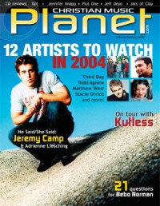
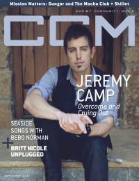

Jeremy Camp
|  January 2004 Christian Music Planet |
 September 2010 CCM Digital |
 1 February 2015 CCM Digital |
 15 October 2017 CCM Digital |
Media coverage:
- Aug 2002 in CCM "A Faith To Remember", by Lisa Tedder
- Jan 2004 in Christian Music Planet "He Said/She Said", by Jenni Isaac, Jaime Partlow
- Jan 2004 in Christian Music Planet "12 Artists to Watch in 2004: Jeremy Camp"
- Feb 2004 in CCM "Breaking Camp", by David A. Jenison
- Mar 2004 in Campus Life "Camp Meeting", by Andy Argyrakis
- Mar 2004 in CCM "The Verdict Is In: 'Rock & Roll Is Here To Stay'", by Anthony DeBarros
- May 2004 in CCM "Standing Room Only: The Adoration Tour", by Andy Argyrakis
- Jul 2004 in New Man "Guy Gear: Jeremy's Camp"
- Aug 2004 in Charisma & Christian Life "Spotlight: He Knows God Is Faithful", by Jonathan Heide
- Sep 2004 in Christian Single "Featured Artist: Jeremy Camp", by Andy Argyrakis
- Nov 2004 in Campus Life "Music: Worth The Pain?", by Andy Argyrakis
- Jan 2005 in CCM "On The Road Again", by Thom Granger
- Jan 2005 in Christian Music Planet "21 Things You Always Wanted To Know About...: Jeremy Camp", by Carol Crenshaw
- Oct 2005 in CCM "Standing Room Only: An Evening With Jeremy Camp", by Andy Argyrakis
- Apr 2006 in CCM "By The Numbers: Jeremy Camp", by Gregory J. Rumburg
- Oct 2006 in CCM "Things I ♥: Jeremy Camp"
- Jan 2007 in CCM "The Art of Voting", by Jay Swartzendruber
- Feb 2007 in CCM "Love Beyond Measure", by Douglas Kaine McKelvey
- Mar 2007 in Ignite Your Faith "Striving To Do Less", by Andy Argyrakis
- Sep 2007 in New Man "Male Matters: Family: A Second Chance"
- Mar 2008 in CCM "Ask Your Favorite Artist: Jeremy Camp"
- Apr 2008 in CCM "Tour Scrapbook: TobyMac, Jeremy Camp, Matthew West", by Andy Argyrakis
- Win 2009 in Ignite Your Faith "Entertainment: Music: How Do You Hear God?", by John Brandon
- Mar 2009 in Christian Single "Q&A: Jeremy Camp"
- Jun 2009 in Charisma & Christian Life "Praise Him In The Storm: Jeremy Camp", by Chad Bonham
- Feb 2010 in CCM Digital "Two Is Better Than One", by Andrew Greer
- Apr 2010 in CCM Digital "Hope Continued", by Matt Conner
- Sep 2010 in CCM Digital "Crying Out, Bowing Down"
- Feb 2013 in CCM Digital "Tour Spotlight: The Story Tour, Sears Centre, Hoffman Estates, IL", by Andy Argyrakis
- Mar 2013 in CCM Digital "Ho Holds Barred", by Caroline Lusk
- 15 Dec 2014 in CCM Digital "Help", by Karen Kingsbury
- Feb 2015 in HM "HM Live Music Issue: Songwriter"
- 1 Feb 2015 in CCM Digital "The Art of Following", by Andrew Greer
- 1 Feb 2015 in CCM Digital ""I Will Follow" Q&A"
- 15 Oct 2017 in CCM Digital "Full Circle", by Kevin Sparkman
Albums & reviews:
2002: Stay
- Sep 2002 in CCM, by Brian Quincy Newcomb
- Oct 2002 in CBA Marketplace, by Gary Hassig
- Jan 2003 in YouthWorker, by Dave Urbanski
- Jan 2003 in HM, by John J. Thompson
- Mar 2003 in Worship Leader, by Mark Camden
2004: Restored
- Nov 2004 in CCM, by Christina Farris
- Jan 2005 in YouthWorker, by Dave Urbanski
- Jan 2005 in Christian Music Planet, by Norm McDonald
- Mar 2005 in Today's Christian Woman, by Lisa Ann Cockrel
- Apr 2005 in Christian Single, by Andy Argyrakis
- Jun 2005 in Living With Teenagers, by Joy Fisher
2004: Carried Me: The Worship Project
- Feb 2004 in CBA Marketplace, by Rhonda Owens
- Mar 2004 in CCM, by Anthony DeBarros
- Mar 2004 in HM, by Doug Van Pelt
- Mar 2004 in Worship Leader, by Craig Marchand
- Mar 2004 in 7ball, by Amy E. Hall
- Apr 2004 in Charisma & Christian Life, by Natalie Nichols Gillespie
- May 2004 in YouthWorker, by Dave Urbanski
- Jul 2004 in Christian Single, by Andy Argyrakis
- Aug 2004 in Living With Teenagers, by Joy Fisher
2006: Beyond Measure
- Nov 2006 in YouthWorker
- Nov 2006 in CCM, by Lindsay Williams
- Jan 2007 in Worship Leader
- Jan 2007 in Relevant, by John Brandon
- Mar 2007 in New Man, by Chad Bonham
2010: We Cry Out: The Worship Project
- Aug 2010 in Charisma
- Sep 2010 in CCM Digital, by Grace C. Cartwright
- Oct 2010 in Worship Leader, by Nicole Fromm
2010: We Cry Out: The Worship Project [deluxe edition]
2012: Christmas: God With Us
- Oct 2012 in CCM Digital, by Andy Argyrakis
- Nov 2012 in Worship Leader, by Jeremy Armstrong
2013: Reckless
- Feb 2013 in CCM Digital, by Matt Conner
- Mar 2013 in HM, by Doug Van Pelt
- Mar 2013 in Worship Leader, by Lindsay Young
2017: The Answer
2020: The Story's Not Over
2022: When You Speak (Deluxe)
2024: Deeper Waters
Award Summary (Nominations / Wins)
Dove Awards- 2004 Dove Awards
- Male Vocalist
- New Artist
- Pop/Contemporary Recorded Song: "I Still Believe"
- Male Vocalist
- Praise & Worship Album: Carried Me: The Worship Project
- Rock Recorded Song: "Stay"
- Male Vocalist
- Pop/Contemporary Album: Restored
- Artist
- Rock Recorded Song: "Lay Down My Pride"
- Male Vocalist
- Recorded Music Packaging: Beyond Measure
- Long Form Music Video: Live Unplugged
- Song: "Give You Glory"
- Inspirational Recorded Song: "Give Me Jesus"
- Male Vocalist
- Male Vocalist
- Pop/Contemporary Album: Speaking Louder Than Before
- Praise & Worship Album: We Cry Out: The Worship Project
- Recorded Music Packaging: We Cry Out: The Worship Project [deluxe edition]
- Rock/Contemporary Recorded Song: "Reckless"
- Rock/Contemporary Album: Reckless
- Song: "Dead Man Walking"
- Pop/Contemporary Album: The Story's Not Over
- Pop/Contemporary Recorded Song: "Dead Man Walking"
- 2009 Grammy Awards
- Best Pop/Contemporary Gospel Album: Speaking Louder Than Before
Published articles:
© 2011 CMnexus. Last updated May 2025. Contact: editor -AT- cmnexus -DØT- org